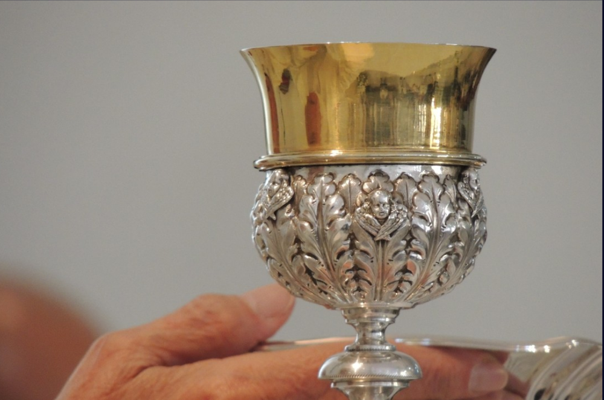

História da Igreja Copta Ortodoxa
Explore os marcos significativos e os eventos históricos que moldaram a trajetória da Igreja Copta.
Saiba MaisTradições & Ordem do Clero
Conheça as tradições centenárias e a estrutura organizacional do clero dentro da Igreja Copta.
Saiba Mais

Jejum & Sacramentos Sagrados
Descubra a importância dos sacramentos e o significado espiritual do jejum dentro da igreja.
Saiba Mais